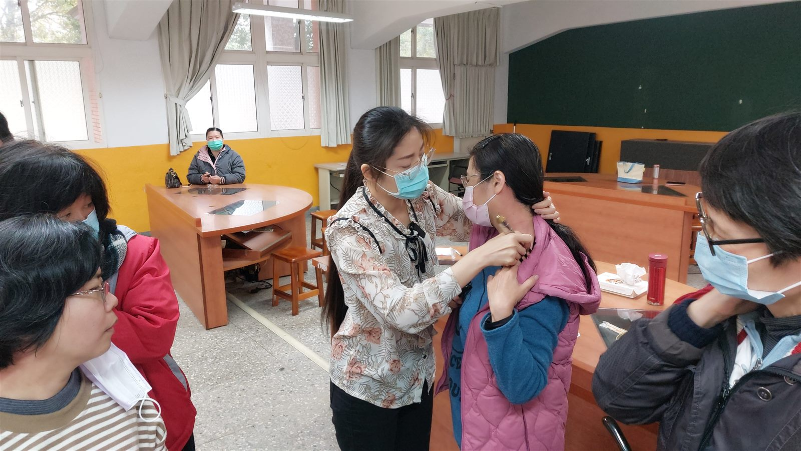

The Bojin Journal · Brows & Forehead
Frown lines and a heavy, tense brow? A gentle bojin release for women over 40

If the two vertical lines between your brows seem to be there even when your face is at rest, and your forehead feels tight by the end of the day, you are noticing something real. The honest answer up front: a few minutes of gentle self-care will not erase those lines or relax a muscle the way an injection does. What it can do is help you let go of the constant brow-knitting habit, so the whole area feels lighter and looks smoother and more rested. That is a smaller promise, and a true one.
Why do I have '11' lines and a heavy, tense brow?
Think about how much your brow does in a day. You squint at a screen, you frown reading small print, you brace against bright light, and when you are worried or concentrating, you pull your brows together without ever deciding to. Over years, that same small movement gets repeated tens of thousands of times.
Two things happen. The skin between your brows learns to fold along the same crease, so the vertical lines start to show even when your face is relaxed. And the muscles across your forehead and around your brows spend so much time gently clenched that holding tension becomes their resting state. That is the heavy, tight feeling you notice at the end of the day.
There is often some fluid and mild puffiness sitting in a forehead that never quite lets go, which can make the whole brow look lower and more set than it is. None of this means anything is wrong with you. It is simply an expressive, hardworking part of the face doing what it has been asked to do for decades.
How the Bojin Method helps a tense brow soften
First, what bojin actually is. If you know gua sha, you have a head start, because bojin grew from the same family of Chinese hands-on face care, so it will feel familiar. But it is its own deliberate method. What makes it work is not how hard or soft you press. It is three things: the order you work in, the angle you hold the tool, and the exact spot you are working.
For a heavy brow, that method matters. You settle the forehead before you touch the crease, you follow the direction the tissue actually wants to move, and you finish where fluid can drain away. The traditional tool is a bojin stick, a slim, polished stainless steel tool shaped to follow the face. You can start with clean fingertips, or a smooth-edged gua sha stone you already own, while you learn, but the stick is what the method was built around.
The pressure is not the barely-there touch people assume, nor is it forceful. It is the right, comfortable pressure for you, firm enough to be felt, never enough to hurt or drag the skin. A tool on its own comes with no method attached. Add the order, the angle, and the exact place to work, and the same few minutes on your brow feel completely different.
This is not about pressing harder or barely touching. It is the right, comfortable pressure, held at the right angle, worked in the right order and the right spot. That order, angle, and placement is the method.
A gentle bojin brow-and-forehead release, step by step
Use a bojin stick or just clean fingertips while you are learning. Put on a little oil or cream first so nothing drags across the skin. Work in order, follow the angle of the bone under your fingers, and keep the right comfortable pressure the whole way through, firm enough to feel, never enough to tug. This is a slow ritual, not a workout.
- Warm and settle the whole forehead Rest the flat of the stick or two fingers at the center of your forehead and glide out toward each temple a few times. This is only to warm the area and let your shoulders drop before you go near the crease.
- Read your face first Pause and notice where the tightness actually sits. Is it the band across the forehead, the two vertical lines, or the low, heavy inner brow? Where you feel the most holding is where you begin, and that sets the order for everything after.
- Ease the vertical crease between the brows Lay the tool flat, angled along the line, not pressing into it. With small, slow strokes work from the inner brow gently upward and outward, following the direction the skin wants to move. Let the angle do the work, not force.
- Open across the brow bone Follow the ridge of the brow bone from the inner corner out toward the temple, keeping the tool angled along the bone. Short, comfortable passes here help the heavy, set feeling above your eyes start to soften.
- Finish down the sides of the neck This is the step most people skip. Sweep gently from behind the ears down the sides of the neck several times, so the fluid you have just moved has somewhere to go. Skip this and the forehead work has nowhere to drain.
What can I honestly expect?
Right after, most people say their forehead feels lighter and less clenched, and the skin looks a little smoother, brighter, and more rested. Puffiness across the brow can look calmer, the area can look a touch more lifted, and because you have slowed down and relaxed, any serum you put on afterward tends to sink in more easily. Done regularly, the real prize is quieter: you start catching yourself before you knit your brow, and that habit of holding tension loosens over time.
Now the honest limits. This is a soothing self-care ritual, not a treatment. It will not erase your frown lines, it will not relax a muscle the way an injection does, and any change in how you look is gentle and comes and goes rather than lasting. Nothing here works overnight, and nothing here is a promise. Anything sudden, one-sided, painful, or a brow or lid that starts drooping on its own is worth seeing your doctor about, not something to work on at your mirror.
Your brow has been working hard for a long time. A few slow, attentive minutes will not turn back the clock, but it can help that hardworking part of your face finally put its guard down for a while.
Quick answers
Can bojin get rid of my frown lines?
No, and anyone promising that is not being straight with you. Gentle bojin can soften the tension and puffiness around your brow so the area looks smoother and more rested, but it cannot erase a line that years of expression have folded into the skin.
Is this the same as gua sha?
Bojin comes from the same family of Chinese hands-on face care as gua sha, so it will feel familiar. It is its own deliberate method, built around the order you work in, the angle you hold the tool, and the exact spot, all at a comfortable pressure.
How often should I do a brow release?
A few minutes most days is plenty. Because the real benefit is loosening the habit of holding tension, gentle and regular does far more than long or hard sessions ever will. Stop any day your skin feels sore or irritated.
Do I need a bojin stick, or can I use my fingers?
You can absolutely start with clean fingertips, or a smooth-edged gua sha stone you already own, while you learn the order and angle. The bojin stick, a slim polished stainless steel tool, is what the method was built around and follows the brow bone nicely once you are comfortable.
See the order, angle, and spot for yourself
Reading about the sequence is one thing; watching it is easier. Our free 3-minute video walks you through the brow release slowly, so you can see exactly where to place the tool, which angle to hold, and the order that makes those few minutes feel completely different. Come try it with me.
Watch the free 3-min videoYu-Ting Lan is a Taiwan-based international bojin instructor and the founder of Héhé Studio. She has taught her bojin method to close to a thousand students — from complete beginners to grandmothers — across Taiwan, Hong Kong, and Malaysia.